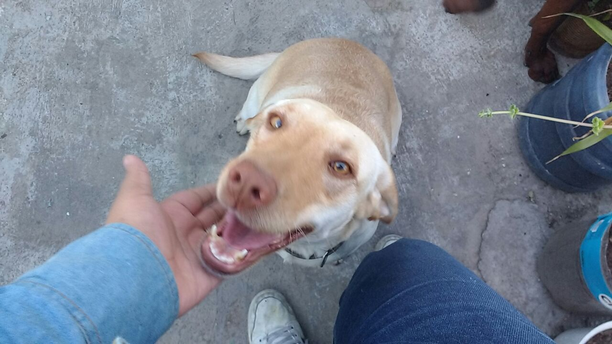
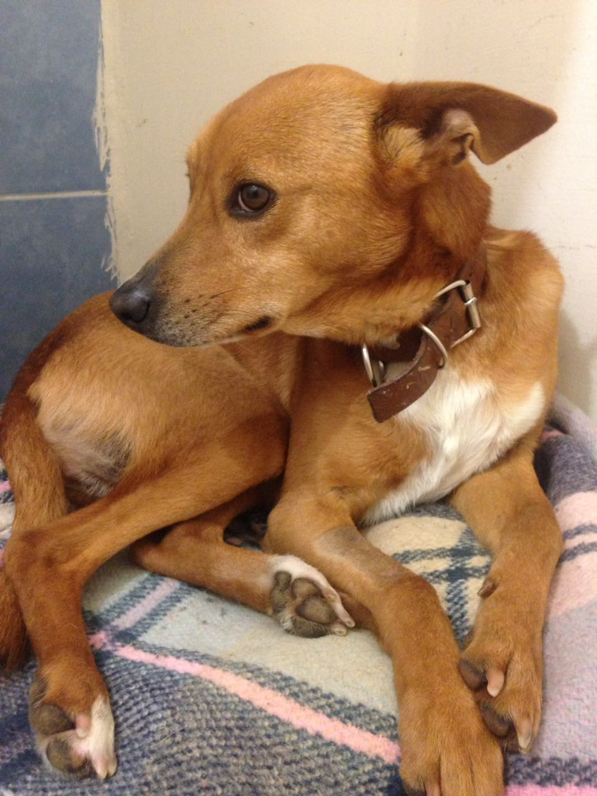
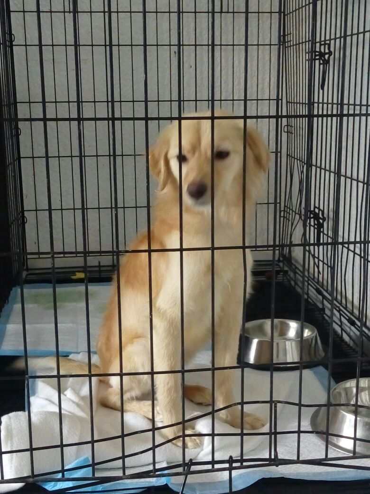

Ella se llama Lola es cruza de labrador tiene 3 años Aproximadamente, es muy dulce y le encanta salir a pasear, se entrega esterilizada.
Ella se llama Lola es cruza de labrador tiene 3 años Aproximadamente, es muy dulce y le encanta salir a pasear, se entrega esterilizada.

Este Gatito lleva algunas semanas en la calle, parece estar perdido, es muy dócil y lindo, necesita un hogar donde lo amen y lo cuiden.

El es Tobbi, es macho de 4 años, es un perrito muy
juguetón y bien portado, dócil y amoroso, Tobbi
fue rescatado, estaba abandonado dentro de una casa
sin alimento, desnutrido y muy muy solo, ahora ya
se ha recuperado pero necesita una familia que lo ame
y lo cuide. Se entrega esterilizado y vacunado.
El es Tobbi, es macho de 4 años, es un perrito muy
juguetón y bien portado, dócil y amoroso, Tobbi
fue rescatado, estaba abandonado dentro de una casa
sin alimento, desnutrido y muy muy solo, ahora ya
se ha recuperado pero necesita una familia que lo ame
y lo cuide. Se entrega esterilizado y vacunado.

Amigos ayúdenos a difundir la foto de esta parrita súper amorosa que necesita un nuevo hogar, fue encontrada hace unos días y rescatada por @Nadadora de aguas abiertas Grace , ya ha sido esterilizada y desparasitada, recibió su baño y es súper cariñosa y calmada. Merece un nuevo hogar y los #Petslovers podemos hallarle uno.
Amigos ayúdenos a difundir la foto de esta parrita súper amorosa que necesita un nuevo hogar, fue encontrada hace unos días y rescatada por @Nadadora de aguas abiertas Grace , ya ha sido esterilizada y desparasitada, recibió su baño y es súper cariñosa y calmada. Merece un nuevo hogar y los #Petslovers podemos hallarle uno.
Politicas de privacidad.
2017 AVA veterinaria
2017 AVA veterinaria
Marketing and desing by  igital Fanovi
igital Fanovi
igital Fanovi